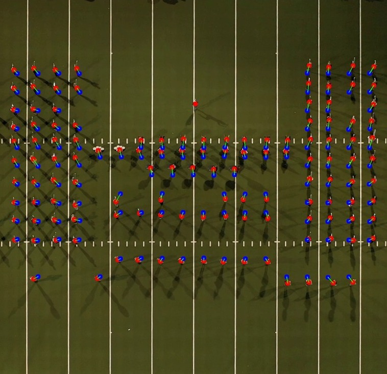

|
Alex Huang I'm a senior studying Computer Science at the University of Wisconsin-Madison with a broad interest in deep learning and multimodal learning. I have extensive hands-on experience working with models spanning across Computer Vision, NLP, and Recommendation Systems. At UW-Madison, I am fortunate to work with Prof. Yin Li on video understanding tasks and Prof. Tim Rogers on understanding the conceptual representations of LLM. I was also honored to receive the 2024 Hilldale Research Fellowship. |
{kind=link}
ResearchI am currently seeking PhD opportunities with a focus on Visual Language Models and Multimodal Models. I would be excited to connect regarding any relevant opportunities! |
|
|
A Data-driven Approach to Reevaluate Facial Expression Categories with 3D Face Reconstruction Model and Deep Learning Clustering Algorithms
Wei-Chun Huang Senior Thesis (In Progress) A clustering method toward Dynamic Facial Expression Recognition. |
|
|
Uniting theory and data: The promise and challenge of creating an honest model of facial expression
Sophie Wohltjen, Y. Ivette Colon, Zihao Zhu, Karina Miller, Wei-Chun Huang, Bilge Mutlu, Yin Li, Paula Niedenthal1 Cognition and Emotion (In Press) Discuss the resources that are available to help researchers build a more ecologically valid model of facial expressions. |
|

|
Measuring large group synchrony and social connection with Machine Learning and Computer Vision
Michelle Marji, Siddharth Suresh, Wei-Chun Huang, Alexis Liu, Karina Miller, Joshua Jackson, Christian Andresen, Corey Pompey, Paula Niedenthal Affective Science (In Press) Track and measure synchrony and spatial configurations of large groups using Machine Learning and Computer Vision. |

|
Categories vs Semantic Features: What shape the similarities people discern in photographs of objects?
Siddharth Suresh, Wei-Chun Huang, Kushin Mukherjee, Timothy Rogers ICLR Workshop, 2024 paper Model trained to produce category labels and model trained to generate semantic features learned very different representational geometries throughout the network. |
|
|
Conceptual structure coheres in human cognition but not in Large Language Models
Siddharth Suresh, Kushin Mukherjee, Xizheng Yu, Wei-Chun Huang, Lisa Padua, Timothy Rogers EMNLP, 2023 paper Discovered important differences between contemporary LLMs and human cognition. |
Other ProjectsBelow are some of the non-research projects I’ve worked on. Feel free to take a look! |
|
|
3D Facial Feature Extraction
repo Extract 3D Facial Features from videos and images using SOTA 3D face reconstruction model - EMOCA . |

|
Video Feature Extraction
repo This directory contains the code to extract features from video datasets using mainstream vision models such as Slowfast, i3d, c3d, CLIP, etc. |
|
This website is built using a template created by Jon Barron. You can find the source code: here . |